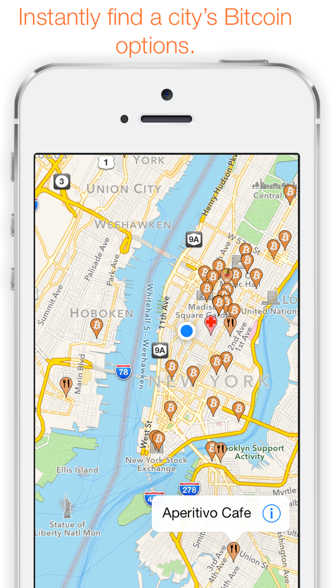
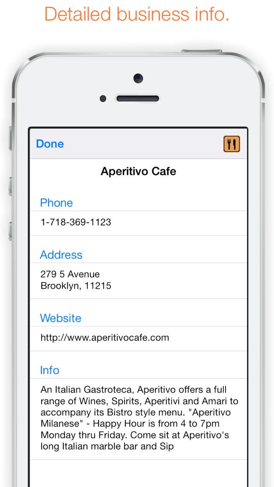

Coin Traveler
Bitcoin World Map
Info
Instantly find hundreds of restaurants, bars, hotels and other businesses around the world and next door that accept your Bitcoins.
Simple and intuitive, Coin Traveler features a world map overlaid with a full icon set, quick city and business name search abilities and detailed business info.
New businesses are added daily.
Screenshots
 
Download